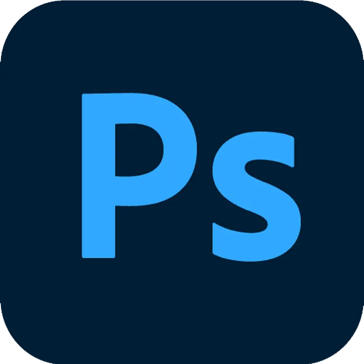
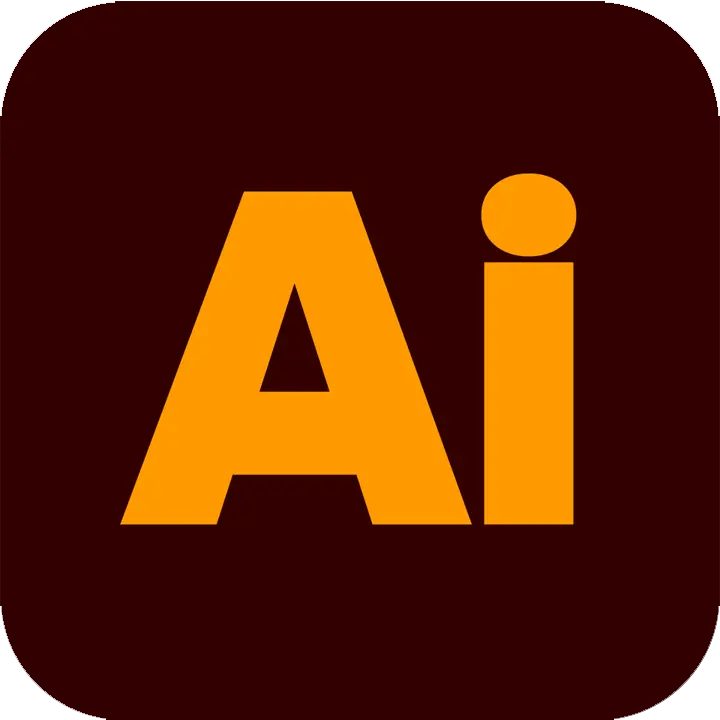
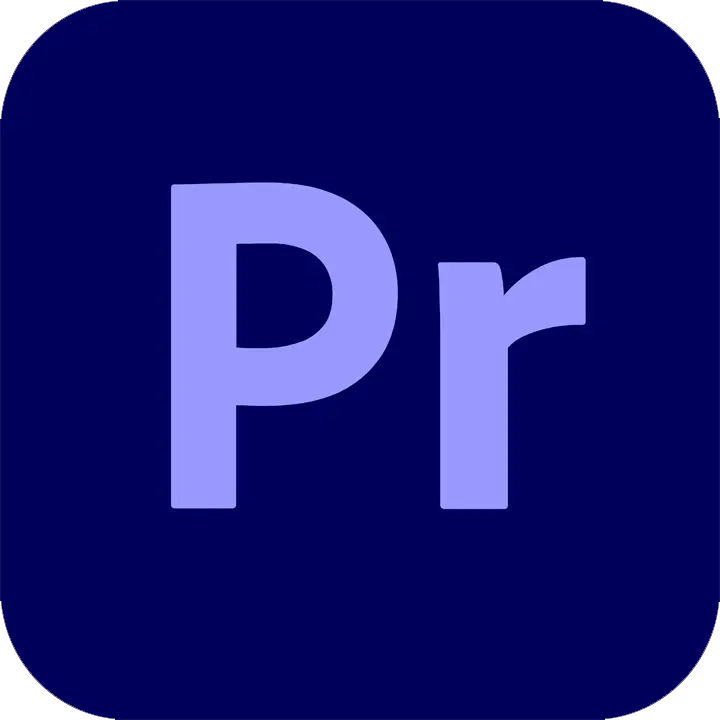
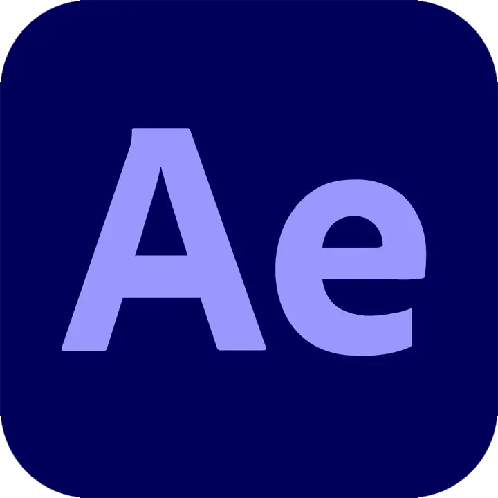
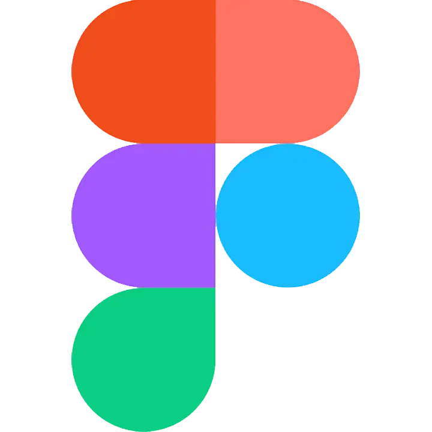
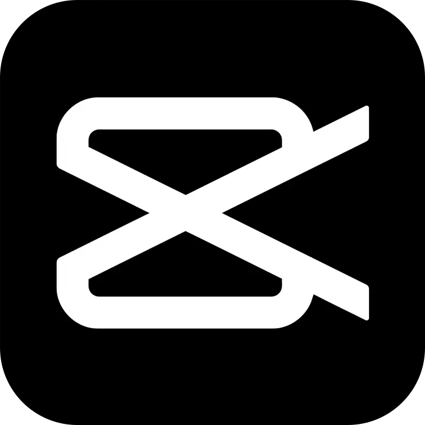

Hey, I'm Alfiansyah
Creative
Technologist
Precision in code.
Emotion in motion.
From visual storytelling to interactive UI, I craft multimedia experiences that connect.
About You Me
A Multimedia Engineering graduate bridging Software Development (Web, Mobile, Game) with Creative Design. I utilize my expertise in Android Studio, Unity, and Web Technologies to build functional digital products with intuitive UI/UX and strong visual aesthetics. With practical experience as a Graphic Designer and Content Creator, specializing in video editing and motion graphics, I am proficient in the Adobe Creative Suite. I thrive in collaborative environments, producing engaging visual content that elevates brand identity and audience engagement, driven by a deep passion for design innovation and storytelling.






Education
Diploma: Teknologi Rekayasa Multimedia
Politeknik Negeri Media Kreatif Jakarta
Multimedia engineering program focused on blending computational software technologies, human-centered UI/UX systems, and interactive media design with practical leadership and creative entrepreneurship.
- Participated in the MAX 1.0 event in the Publication and Documentation division
- Participating in PMW (Program Mahasiswa Wirausaha)
- GPA: 3.76 / 4.00
Experience
AI Video Editor Intern
AHA Commerce
Leading e-commerce enabler specializing in brand scaling, data-driven marketing, and automated conversion optimization.
- Utilized generative AI video synthesis pipelines to rapidly storyboard and produce commercial ads.
- Optimized video ad variations for TikTok Shop, Shopee, and Meta Ads to maximize click-through and retention rates.
- Collaborated with performance marketing teams to iterate high-converting visual hooks.
Video Editor Intern
PT. Oasis Genius Hospitality
Premium hospitality management group curating luxury resort experiences and high-end lifestyle destinations.
- Edited cinematic short-form promotional reels and resort showcases for high-net-worth audiences.
- Executed precision color grading, cinematic sound design, and drone footage pacing.
- Enhanced social media audience engagement through dynamic vertical storytelling.
Graphic Designer Intern
PT. Gramedia Asri Media
Indonesia's largest publishing and retail powerhouse, driving nationwide literary culture and creative educational distribution.
- Designed editorial publishing layouts, promotional book displays, and marketing collaterals for major releases.
- Developed engaging digital banner assets and social media graphics aligned with national campaigns.
- Ensured strict brand consistency across physical print and digital omni-channel distribution.
Graphic Designer & Content Creator Intern
Politeknik LP3I
Pioneer institution in vocational education and career-ready professional development in Indonesia.
- Spearheaded visual content creation for campus promotional campaigns and student recruitment drives.
- Produced kinetic social media videos, informative infocards, and digital motion graphics.
- Managed creative assets and visual documentation for academic webinars and campus workshops.
Freelancing
Graphic Design & Video Editing
Independent creative practice delivering tailored multimedia solutions for commercial brands and digital ventures.
- Delivered custom brand identity systems, marketing illustrations, and interactive UI prototypes for diverse clients.
- Directed end-to-end video post-production, motion graphics animation, and kinetic typography sequences.
- Maintained 100% on-time milestone delivery and direct stakeholder collaboration.
Projects
Selected Works & Case Studies
Explore client projects organized across graphic design, video editing, motion graphics, and UI/UX engineering.
Contact: Get in touch & Inquiries
Have an upcoming project, a video production need, or a creative role to fill? Let's connect and discuss how we can bring it to life.